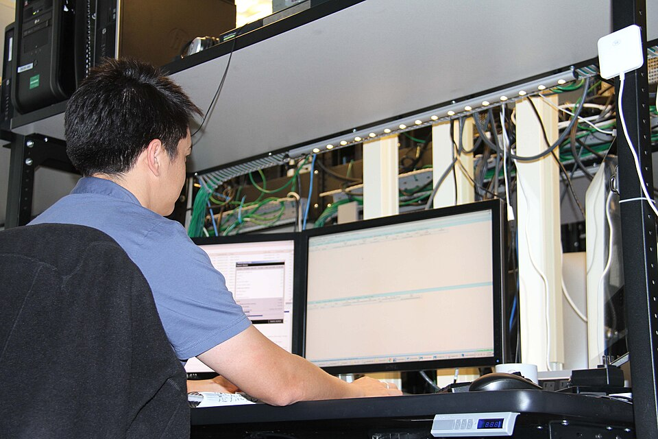

Digital Forensic Analyst
Digital forensic analyst examine computer evidence to solve cybercrimes and strengthen defences.
Return to my Homepage or learn more About Me

What they do
Digital Forensic Analysts examine devices and critical evidence after criminal activities.
- They maintain records, documents, and files
- Analyze wifi trafic and data
- Write and finish cyber reports.
- Testify in court as an expert witness.
Skills you need
Technical skills
- You need to be able to use computers and electronics, including operating system basics, hardware, network secuity, ect.
- Able to understand a basic knowledge of Law and goverment regulations.
- The ability to write javascript, python, ect and analyze system data.
People skills
- Strong speaking to present evidence.
- Active listening and problem solving skils.
How to get started
- Obtain a Bachelor's degree in Digital Forensic.
- Hands on experience through interships or entry level positions like Help Desk
- Aquire certifications
- Just start to applie to positions.
Certifications and credentials
Certifications show somewhat show employers that you have technical expertise
Pay and job outlook
According to careeronestop.org the employment is going to have rapid growth with over 27,000 positions hiring per year in the United States alone.
With the average position paying out 111,530$ a year!
Where you could work
Common employers are government agencies like the FBI, private defence contracting firms, and corporate cybersecuity organizations.
Why this career interests me
I would find this career path intresting because it has a uniqe amount of problem solving but also with the constant challenge of keeping up with the advances of technology.
Sources